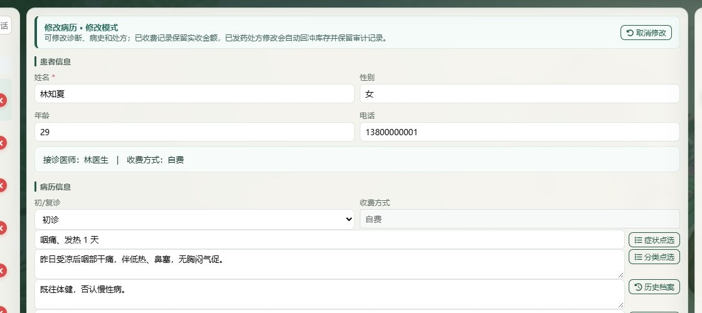
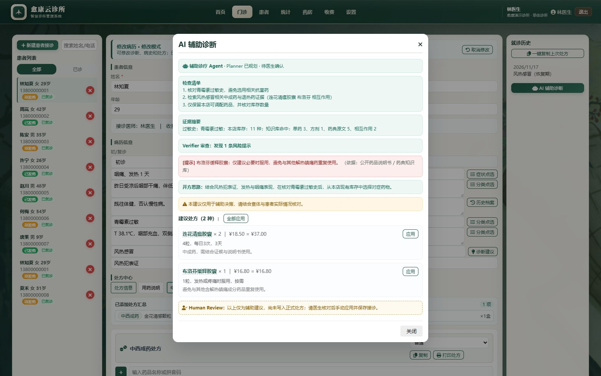
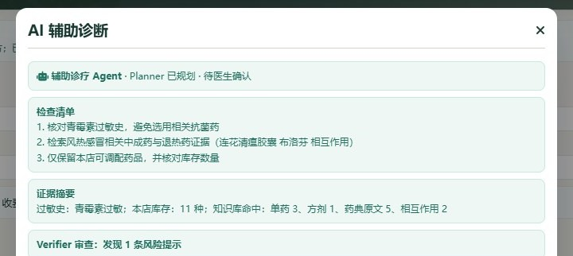
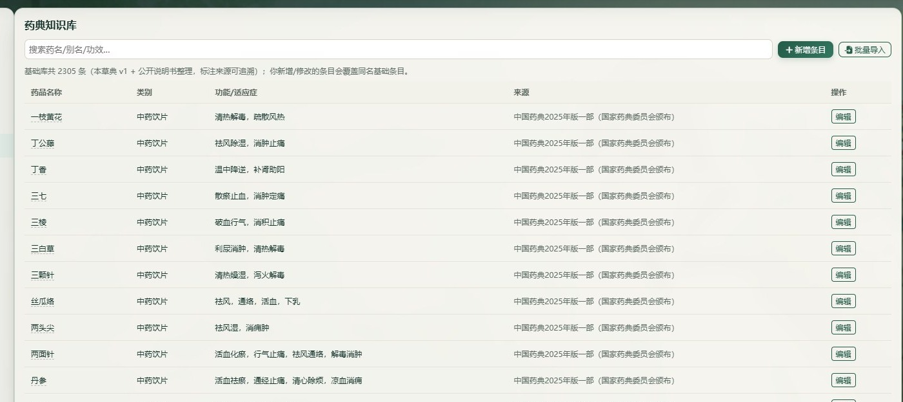
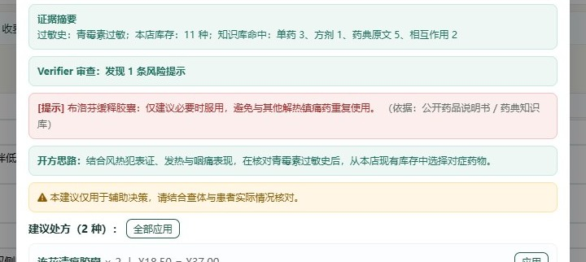
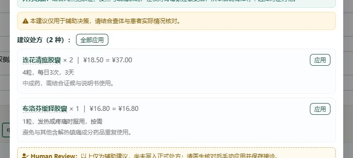
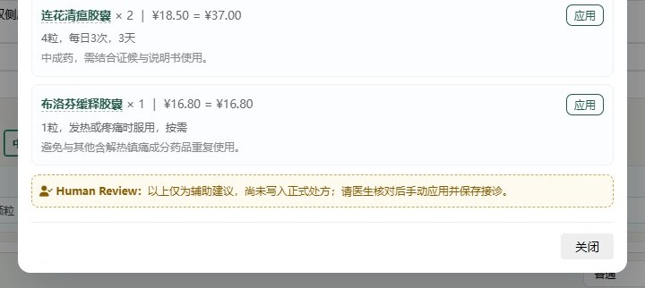

采集症状与病史
医生先完成主诉、现病史、既往史、过敏史、望闻问切、体格检查、诊断和辨证等病历内容。未填写的关键项不会被系统擅自补成事实。
愈康的 AI 辅助诊疗不是“一键自动开方”。它先规划检查项，再检索本地药典、本店库存、过敏史和药物相互作用，最后生成带证据与风险提示的候选建议。建议不会自动进入正式处方，必须由医生逐条应用、修改并保存。

AI 负责把资料和风险摆到桌面上，诊断与处方权始终属于医生。
流程不是把整份病历直接丢给模型就结束。系统把规划、知识检索、规则审查、模型建议和人工确认拆开，便于核对每一步到底用了什么资料、给出了什么结果。

医生先完成主诉、现病史、既往史、过敏史、望闻问切、体格检查、诊断和辨证等病历内容。未填写的关键项不会被系统擅自补成事实。

Agent 根据当前病例决定要查哪些工具和检索方向，例如过敏史、库存、药典条目或相互作用；模型无法正常规划时回退到固定检查清单。

系统在本地知识库中检索相关单药、方剂、病症证型和药典原文，同时读取本店当前药品目录与库存。工具按固定顺序执行，避免模型自由触发副作用。

把病历中的过敏史、候选药品、本店库存与相互作用知识放到同一张证据面板中，优先暴露超库存、非本店药品、严重相互作用和证据不足等问题。

模型只从本店药品目录中给出候选药、数量、用量、频次、天数和理由；Verifier 再检查药品白名单、严重风险与知识证据，结果状态固定为待医生审核。

医生核对药名、剂型、剂量、频次、疗程和禁忌，逐条应用、修改或放弃建议，最后点击保存。AI 建议本身不会自动写入或自动保存为正式处方。
说明：本页展示软件真实界面与完整流程结构；“演示响应”表示当前演示环境未配置真实模型 Key，截图内容不作为真实诊断能力或模型效果证明。
以下四张界面截屏分别展示检查清单、本地药典检索、风险审查与人工确认环节；点击可在站内查看大图。
显示本次病例规划出的检查项与原因，让医生在阅读建议前就知道系统是否真的核对了过敏、库存、药典和相互作用。
汇总检索到的知识条目及其来源。证据不足时明确显示“建议线下进一步评估”，而不是用看似确定的语气补全结论。
规则审方与白名单核查独立于模型建议。严重风险、非本店药品和关键证据缺口都会被显式标出，避免隐藏在长段建议里。
候选建议与正式处方分离。医生逐条确认后才会进入处方区，保存动作仍由医生完成；关闭 AI 或模型失败也不会阻断正常接诊。
局部截图均来自 YuKangClinic v5.1.0 实际运行界面 · 演示诊所数据
边界必须能核对。愈康只在启用 AI 且配置了服务商密钥时调用第三方模型；请求内容用于本次辅助诊疗，不把患者姓名、手机号或身份证号放入第三方提示词。
技术说明：本机前端请求体可能包含内部患者 ID，用于本机接口定位就诊记录和写入日志；该 ID 不进入第三方模型提示词。第三方服务商仍可能按其隐私政策记录请求元数据，对数据出域有硬性要求时，应关闭第三方 AI 或改用本地模型。
AI 适合作为病历整理、知识检索、风险核对和候选方案生成工具；它不适合独立诊断、替代临床判断或绕过医生审核。
当前演示响应没有接入真实模型 Key；软件流程与界面来自真实运行版本，AI 输出质量则取决于所配置服务商、模型、知识库和具体病例。
不能。检查清单、药典检索、规则审方和模型白名单只能降低遗漏风险，不能替代医生诊断、临床经验、药品说明书和正式审方责任。
可以。AI 是可选辅助功能。关闭 AI、断网、额度不足或模型返回异常时，患者建档、病历、手工开方、药房、收费和统计仍可继续使用。
模型输出可能遗漏、过时或产生错误。系统把建议放在待审核状态，只有医生逐条应用、修改并主动保存后，才会进入正式处方，从而保留人工决策点。
在设置中关闭第三方 AI，不填写任何外部服务商 API Key；对必须使用 AI 的场景，应选择符合机构数据要求的本地模型部署方案，并另行完成安全评估。
Windows 10/11 x64 · v5.1.0 · 未签名内部预览版 · 当前 AI 截图为演示响应